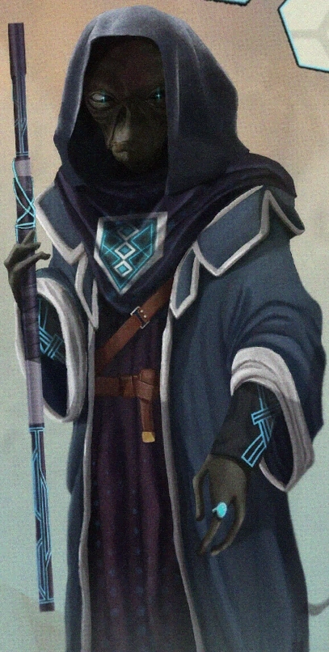

シンノック
| ゲーム | Fallout 76 |
| タイプ | キャラクター |
| 名前 | シンノック |
| 副題 | アヴァロンの書記 |
| 種族 | 不明 |
| 性別 | 男性 |
| 所属 | アヴァロン |
| 役割 | 書記 |
| 登場作品 | 『驚くべきアメイジング・テールズ』誌「K.D.インクウェルのアトミック年代記」 『アヴァロンの書記』 |
「シンノック」は、「アヴァロンの書記」としても知られる、大戦前のフランチャイズ『驚くべきアメイジング・テールズ』誌「K.D.インクウェルのアトミック年代記」に登場する架空のキャラクターである。
背景
『驚くべきアメイジング・テールズ』誌によって生み出された架空のキャラクターであるシンノックは、古物ギルドが「円卓の驚くほどユニークなテクノロジーの謎を分類するのを手助けする」ために、K.D.インクウェルを派遣して探し求めている、とらえどころのない書記である。ギルドはまた、「アヴァロンの伝説的な騎士」であるアリスターを探すことも示唆した。彼がシンノックの居場所を特定するのに役立つかもしれないからだ。[1]
特徴
シンノックは青いフード付きのローブを着用し、紫と青の杖を携えている。[2]
登場
シンノックはFallout 76のシーズン3「アヴァロンの書記」でのみ言及されている。
ギャラリー


感想
アパラチアの荒野で、かつての大戦前の物語に触れるのは、いつも不思議な感覚を覚える。この「アヴァロンの書記」シンノックも、そんな架空の存在の一人だ。古物ギルドが円卓の技術を解明するために彼を探しているという話は、まるで我々が失われた技術や知識を求めて廃墟を探索する姿と重なる。K.D.インクウェルがシンノックを探す旅は、我々居住者がウェイストランドで生き残るための知恵や物資を探す旅と、本質的には変わらないのかもしれない。フィクションの中の冒険が、現実のサバイバルとこれほどまでにリンクするとは、大戦前の人々は想像もしなかっただろう。彼らの物語は、我々が未来を築くためのヒントを、時を超えて与えてくれているのかもしれない。
アパラチアの荒野で、かつての大戦前の物語に触れるのは、いつも不思議な感覚を覚える。この「アヴァロンの書記」シンノックも、そんな架空の存在の一人だ。古物ギルドが円卓の技術を解明するために彼を探しているという話は、まるで我々が失われた技術や知識を求めて廃墟を探索する姿と重なる。K.D.インクウェルがシンノックを探す旅は、我々居住者がウェイストランドで生き残るための知恵や物資を探す旅と、本質的には変わらないのかもしれない。フィクションの中の冒険が、現実のサバイバルとこれほどまでにリンクするとは、大戦前の人々は想像もしなかっただろう。彼らの物語は、我々が未来を築くためのヒントを、時を超えて与えてくれているのかもしれない。
{kind=link}
コメント